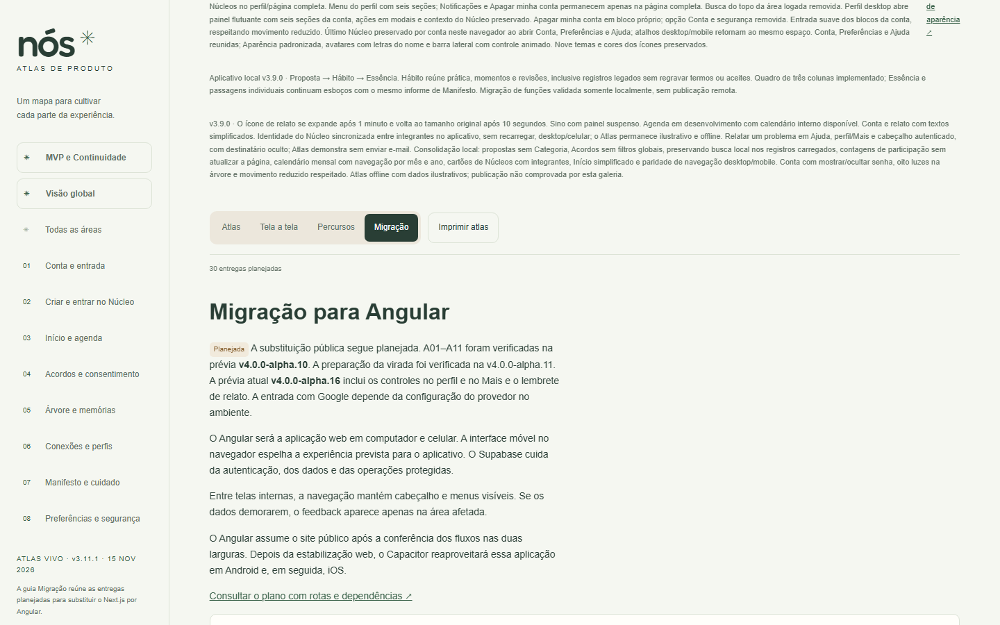
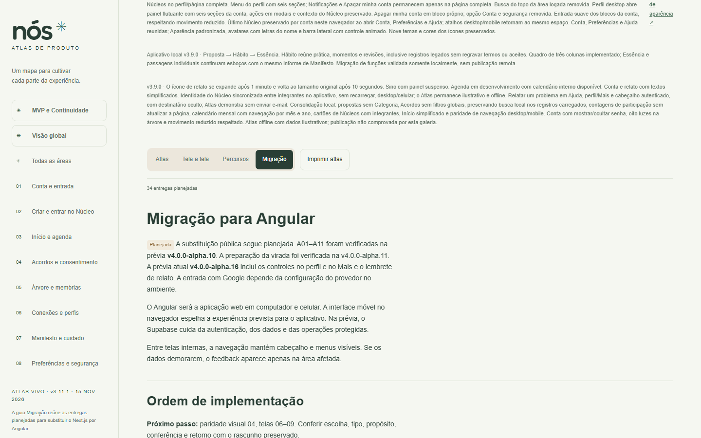
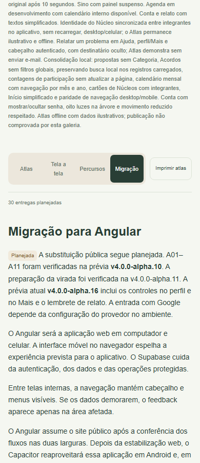
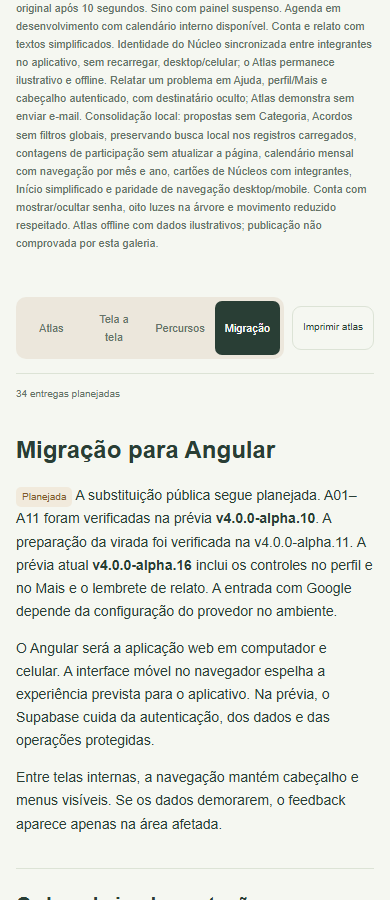

19/11/2026 · prévia Angular v4.0.0-alpha.16. Capturas do Atlas local no Chromium. A guia tem quatro fases após a mudança e reúne virada e arquivamento na primeira. A guia é uma visão do Atlas, sem ficha de tela ou equivalente no aplicativo.



